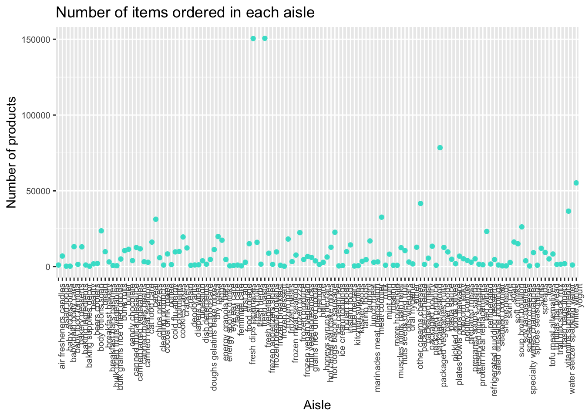

Interactive graphics!!
set.seed(1)
data("instacart")
instacart## # A tibble: 1,384,617 x 15
## order_id product_id add_to_cart_ord… reordered user_id eval_set
## <int> <int> <int> <int> <int> <chr>
## 1 1 49302 1 1 112108 train
## 2 1 11109 2 1 112108 train
## 3 1 10246 3 0 112108 train
## 4 1 49683 4 0 112108 train
## 5 1 43633 5 1 112108 train
## 6 1 13176 6 0 112108 train
## 7 1 47209 7 0 112108 train
## 8 1 22035 8 1 112108 train
## 9 36 39612 1 0 79431 train
## 10 36 19660 2 1 79431 train
## # … with 1,384,607 more rows, and 9 more variables: order_number <int>,
## # order_dow <int>, order_hour_of_day <int>,
## # days_since_prior_order <int>, product_name <chr>, aisle_id <int>,
## # department_id <int>, aisle <chr>, department <chr>aisle_scatter=instacart %>%
janitor::clean_names() %>%
group_by(aisle) %>%
summarize(n = n()) %>%
arrange(desc(n))
ggplot(aisle_scatter, aes(x = aisle, y =n)) +
geom_point(color = "turquoise") +
theme(
axis.text.x = element_text(angle = 90, hjust = 1),
axis.text = element_text(size = 7.5)) +
labs(
title = "Number of items ordered in each aisle",
x = "Aisle",
y = "Number of products"
)
hour_graph=instacart %>%
filter(product_name == "Pink Lady Apples" |
product_name == "Coffee Ice Cream") %>%
group_by(product_name, order_dow) %>%
summarize(mean_order_hour= mean(order_hour_of_day)) %>%
select(product_name, order_dow, mean_order_hour) %>%
pivot_wider(
names_from = order_dow,
values_from = mean_order_hour
)